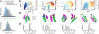
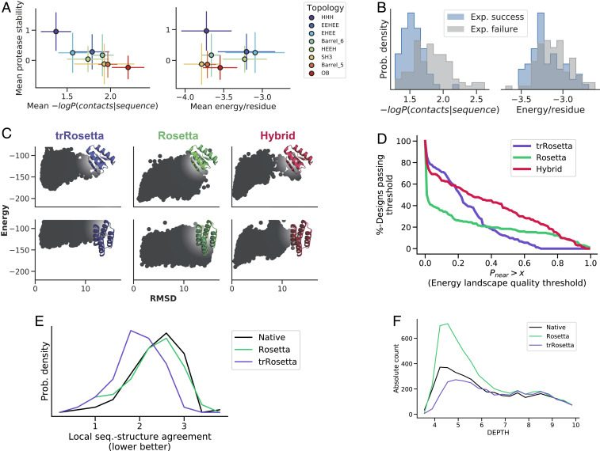

Protein sequence design by conformational landscape optimization
Abstract
SignificanceAlmost all proteins fold to their lowest free energy state, which is determined by their amino acid sequence. Computational protein design has primarily focused on finding sequences that have very low energy in the target designed structure. However, what is most relevant during folding is not the absolute energy of the folded state but the energy difference between the folded state and the lowest-lying alternative states. We describe a deep learning approach that captures aspects of the folding landscape, in particular the presence of structures in alternative energy minima, and show that it can enhance current protein design methods.Keywords: protein design, machine learning, energy landscape, sequence optimization, stability prediction
Computational design of sequences that fold into a specific protein structure is typically carried out by searching for the lowest-energy sequence for the desired structure. In Rosetta and related approaches, side-chain rotamer conformations are built for all amino acids at all positions in the structure, the interaction energies of all pairs of rotamers at all pairs of positions are computed, and combinatorial optimization (in Rosetta, Monte Carlo simulated annealing) of amino acid identity and conformation at all positions is carried out to identify low-energy solutions. Over the past 25 years, a number of algorithms (1–3) have been developed to solve this problem, including recent deep learning-based solutions (4–6). A limitation of all of these approaches, however, is that while they generate a sequence that is the lowest-energy sequence for the desired structure, they can result in rough energy landscapes that hamper folding (7, 8) and do not guarantee that the desired structure is the lowest-energy structure for the sequence. Thus, an additional step is usually needed to assess the energy landscape and determine if the lowest-energy conformation for a designed sequence is the desired structure; the designed sequences are subjected to large-scale stochastic folding calculations, searching over possible structures with the sequence held fixed (9). This two-step procedure has the disadvantage that the structure prediction calculations are very slow, requiring many central processing unit (CPU) days for adequate sampling of protein conformational space. Moreover, there is no immediate recipe for updating the designed sequence based on the prediction results—instead, sequences that do not have the designed structure as their lowest-energy state are typically discarded. Multistate design (10–12) can be carried out to maximize the energy gap between the desired conformation and other specified conformations, but the latter must be known in advance and be relatively few in number for such calculations to be tractable.
We recently described a convolutional neural network called trRosetta that predicts the probability of residue–residue distances and orientations from input sets of aligned sequences. Combining these predictions with Rosetta energy minimization yielded excellent predictions of structures in benchmark cases, as well as recent blind Continous Automated Model EvalutiOn (CAMEO) structure modeling evaluations (13). While native structures usually require coevolution constraints derived from multiple sequence alignments to be predicted, the structures of de novo designed proteins, perhaps owing to their idealized sequence–structure encoding (9, 14), could be predicted from just the single sequences (13). Because distance and orientation predictions are probabilistic Because probability distributions over possible distances and orientations are predicted, we reasoned that they might inherently contain information about alternative conformations and thus, provide more information about design success than classical energy calculations. Moreover, because these predictions can be obtained rapidly for an input sequence on a single graphical processing unit (GPU), we reasoned that it should be possible to use the network to directly design sequences that fold into a desired structure by maximizing the probability of the observed residue–residue distances and orientations vs. all others. Unlike the standard energy-based sequence design approaches described in the previous paragraph, such an approach would have the advantage of explicitly maximizing the probability of the target structure relative to all others (Fig. 1A).
Results and Discussions
Sequence Design by Gradient Backpropagation.
We set out to adapt trRosetta for the classic “fixed backbone” sequence design problem by developing a suitable loss function assessing the probability of the desired structure for a given sequence and an efficient optimization method for finding sequences that maximize this probability. For the loss function, we simply sum the logarithms of the probabilities of the observed interresidue distances and orientations—a proxy for the log likelihood of the sequence given the structure. For optimization, we experimented with a simple iterative procedure in which a sequence is 1) randomly generated and input to the network. 2) The gradient of the loss is backpropagated to the input sequence (treated as an N × 20 position-specific scoring matrix [PSSM]). 3) New amino acid sequence distributions are obtained at each position through a step down the gradient. 4) A single new amino acid sequence is obtained by selecting the highest-probability amino acid at each position, and 5) this sequence is fed back into the network for the next iteration/update (Fig. 1B). We found that this procedure converged for a variety of ∼100-residue protein structures after ∼25 iterations, requiring only a few minutes of GPU time. We benchmarked this optimization method by redesigning 2,000 proteins previously generated using Markov chain Monte Carlo optimization with trRosetta (15). For all cases, the gradient descent approach can find a similar or better-scoring solution within 100 iterations (SI Appendix, Figs. S2 and S3 and Table S1).
In many design applications, it is desirable to generate not just one sequence that folds to a given structure but an ensemble of them. In Rosetta, this is typically done through many independent Monte Carlo sequence optimization calculations, which are CPU time intensive. We reasoned that our trRosetta sequence design approach could be extended to generate not just one sequence but ensembles of thousands of sequences in one pass by taking as the variables being optimized the identities of the amino acid sequences of 10,000 or more aligned sequences, with minimal impact to run time. This is straightforward since the trRosetta network already takes aligned sequences as inputs (SI Appendix, Fig. S1C). As shown in SI Appendix, Fig. S1E, such “sequence alignment” design generates alignments with residue–residue covariation and other hallmarks of native protein sequences (SI Appendix, Fig. S12). This approach could be useful for guiding the construction of smart sequence libraries for directed evolution of enzyme activities and other properties where the number of sequences in the naturally occurring family is too small to adequately estimate these features. We focus the present analysis on the design of single sequences.
trRosetta Captures General Properties of the Folding Energy Landscape.
Because trRosetta generates probability distributions over all possible structures, we reasoned that it might be able to detect overall properties of folding energy landscapes better than conventional methods such as Rosetta, which only “see” the target structure (Fig. 1A). To test this, we collected a set of 4,204 monomeric proteins designed by Foldit Players, who compete to optimize the Rosetta energy of designed structures without the aid of energy landscape calculations (16). We used ab initio folding calculations to generate tens of thousands of conformational samples (decoys) for each designed sequence, and examined the resulting energy landscapes, in particular the relationship between the energy of each decoy (as computed by Rosetta) and its structural deviation from the designed state. Some energy landscapes are characterized by sharply funneled profiles leading into the designed target structure, while others are relatively flat, with little or no energy gap between the designed structure and very different structures. These differences were quantified using an estimate of the Boltzmann probability of the target structure (Pnear) (Eq. 6). Next, for each sequence, we used trRosetta to predict marginal distributions of residue–residue distances and orientations and from these distributions, estimated the log likelihood of the sequence given the structure (represented as a tensor of six-dimensional [6D] transformations between every pair of residues within 10-Å Cβ–Cβ distance). Energy landscapes obtained from ab initio folding calculations are approximate as the sampling procedure is biased, nonexhaustive, and employs an imperfect energy function (17), but these biases should not qualitatively change our conclusions about overall landscape shape.
We found that trRosetta was a better predictor of designs with high Pnear scores than the Rosetta energy function (Fig. 2A). For energy landscapes with low Pnear values, the likelihood of the designed structure given the sequence was lower on average than for designs with high Pnear values. Hence, as hypothesized above, the trRosetta probability distributions assign higher probability to the reference (target) structure when the energy landscape is more funneled. Being able to assess energy landscape properties from a calculation on a single structure is quite remarkable and should have considerable practical utility; large-scale protein folding energy landscape characterization using molecular dynamics methods even for small proteins is a resource-intensive computational task (18, 19), and even Rosetta ab initio folding simulations are extremely computationally intensive, requiring thousands of CPU hours to generate enough structures to map out the landscape, while the trRosetta calculations take seconds on standard GPUs. As energy landscape evaluation is the final step in de novo protein design before experimental characterization—to determine the extent to which the sequence encodes the structure—this much more rapid approach to evaluate landscapes should considerably streamline the de novo design process.

Next, we investigated how trRosetta distributes probability density across the energy landscape when alternative low-energy states are present. To assess this, we computed the probability of each of the tens of thousands of decoy structures spread throughout the energy landscape with trRosetta. When no alternative energy minima were present, probability density was concentrated near the designed target structure and decreased monotonically with increasing distance from the target structure in both the structural and energy dimensions (Fig. 2 B, first column). In contrast, for designs with alternative minima, the total probability density of the designed target structure was lower, with substantial probability “leaking” into the alternative minima (Fig. 2 B, columns 2 to 4, and SI Appendix, Fig. S4). Thus, the trRosetta calculation of structure probability density from sequence recapitulates not only the Boltzmann probability of the design target structure but also—in cases with alternative minima—the dilution of this probability density into specific alternative states.
We investigated how the trRosetta predicted probability distributions encode the existence of multiple structures for one sequence. Examination of the probability distributions for specific residue–residue distances for energy landscapes with multiple minima revealed that for some residue pairs, the distributions were bimodal (Fig. 2D and SI Appendix, Figs. S4 and S5), with one peak corresponding to the design target state and the second corresponding to the alternative minimum. This suggests that trRosetta may be recognizing the presence of alternative states explicitly. In other cases, the maximum predicted distance probability was in between the two low-energy states; distance features may get averaged and broadened in cases where the model is less certain about the structure (SI Appendix, Figs. S4 and S5). These observations have implications for multistate design; probabilistic models such as trRosetta may enable the simultaneous optimization of two or more structures—a challenging task for energy-based design methodologies.
trRosetta Identifies More Stable De Novo Designs.
As a first step toward using trRosetta for de novo protein design, we took advantage of a high-throughput protease resistance-based protein stability assay that enables experimental quantification of the stability of tens of thousands of designed proteins in parallel. In addition to 16,174 already characterized miniproteins within the topologies HHH, HEEH, EEHEE, and EHEE (where H and E denote helices and sheets respectively) (20), we designed a set of 13,985 sequences that fold into four different β-sheet topologies using Rosetta. Genes encoding these designs were encoded in large oligonucleotide arrays and transformed into yeast cells, and the encoded designs were displayed on the surface of the cells. Treatment with trypsin and chymotrypsin at different concentrations followed by fluorescence-activated cell sorting and deep sequencing was used to quantify the stability of each design. We then determined the probability of each designed structure given the designed sequence according to trRosetta and investigated the extent to which this distinguished stable designs from unstable designs. As shown in Fig. 3A, the trRosetta probability calculations indeed distinguished stable from unstable designs, with designs having high-probability structures being more stable on average than designs with low probability. Compared with the Rosetta energy function, trRosetta was better at predicting stability across topologies (Fig. 3A), while Rosetta was often better at predicting stabilities within topologies (SI Appendix, Fig. S6), a property that we attribute to an apparent limited structural resolution of trRosetta (see below).

In laboratory experiments, designed proteins can fail for a variety of reasons, even after passing stringent computational selection criteria. Typical problems include lack of soluble expression, aggregation, and folding into unintended structures. Reasoning that many of these problems could be associated with poor energy landscapes, we evaluated the ability of trRosetta to predict the experimental success of 145 Foldit Players proteins that had been selected for experimental testing based on ab initio folding (16). Compared with Rosetta energy, trRosetta better predicts whether a protein can be expressed, purified, and is folded (Fig. 3B). trRosetta also had considerable predictive power for expression alone, aggregation, and monomericity (SI Appendix, Fig. S7). While more extensive characterization on a wider variety of designed proteins will be important to establish generality, given that experimental characterization is a bottleneck in protein design, trRosetta could become a useful tool for prefiltering designs.
Sequence Design Using trRosetta Disfavors Off-Target States.
The landscape awareness encoded in trRosetta’s probabilistic description of sequence–structure relationships suggests that it could be used to design sequences that maximize the probability of the desired state explicitly, by avoiding the presence of alternative states. To investigate this possibility, we redesigned a diverse set of backbones with the backpropagation method described above; we grouped the 4,204 Foldit designs into 200 structural clusters spanning a large range of topologies (SI Appendix, Fig. S8) and picked one structure from each cluster. The same backbones were also redesigned with Rosetta (SI Appendix, Methods), providing a direct comparison of the consequences of minimizing energy vs. maximizing probability. Following design, large-scale ab initio folding calculations were performed to map out the energy landscape of each sequence, and the probability of the target structure was computed as described above.
The energy landscapes of sequences designed with trRosetta had on average higher Pnear values than those of sequences designed with Rosetta (Fig. 3D and SI Appendix, Fig. S9), consistent with its more complete view of the energy landscape. However, in some cases, the predicted energy landscapes had less pronounced funnels leading into the target structure, and the energy gap between the target structure and the lowest-lying alternative states was smaller. This likely reflects the relatively low-resolution representation of the structure used by trRosetta: accurate energy calculations require sub-ångström resolution, which the angle/distance bin sizes of trRosetta do not capture. trRosetta’s limited recapitulation of the thermodynamic consequences of single-point mutations (SI Appendix, Fig. S10) and low sequence recovery for native structures (14.8%) (SI Appendix, Methods) are also consistent with this resolution limitation. Thus, while trRosetta is better at capturing the global features of energy landscapes, the Rosetta full-atom description is more capable at creating deep energy minima at the target structure. These results suggest that trRosetta is more adept at disfavoring alternative minima while Rosetta is better at creating a deep minimum at the target structure. From the perspective of the energy landscape, trRosetta appears to coarsely shape the energy folding funnel (increases the energy as the structure deviates from the target state), while Rosetta with its high-resolution representation can create a deep energy minimum at the target structure.
As the two approaches have different strengths, we hypothesized that a combined method might prove more effective than either alone. We evaluated the performance of a hybrid trRosetta–Rosetta design protocol by redesigning the same set of backbones, followed by ab initio folding calculations. For each target structure, trRosetta was used to generate a PSSM, which was then used to constrain and bias the choice of amino acids at each position in Rosetta sequence design calculations (SI Appendix, Methods). This approach proved superior to either method on its own, leading to more funneled energy landscapes (Fig. 3D, red line), attesting to the strength of combining design methodologies working at different levels of resolution. This hybrid method also outperformed two state-of-the-art design protocols that attempt to compensate for the lack of energy landscape awareness of Rosetta design calculations (SI Appendix, Fig. S11): LayerDesign, which disallows amino acids based on their surface exposure (21), and fragment-based PSSMs, which favor local sequence–structure relationships (22). To make the hybrid design method computationally more tractable for high-throughput sequence design, we created a hyperparameterized version specifically for fast PSSM generation (hybrid-f), which runs faster (∼100 fold) with only a slight decrease in energy landscape quality (SI Appendix, Methods and Fig. S11). We anticipate that the hybrid methods presented here will be broadly useful, as they combine a moderate resolution representation of the overall energy landscape with a detailed atomistic representation of the target structure.
What properties of folding free energy landscapes are captured by trRosetta? Physical interpretation of representations within neural networks with millions of parameters is not straightforward, but we can identify at least three distinct contributions. First, the trRosetta network likely identifies alternative global and supersecondary structure packing arrangements (Fig. 2B), which are reflected in the bimodal distance distributions (Fig. 2D and SI Appendix, Figs. S4 and S5). Second, compared with Rosetta-based designs and native proteins, designs made with trRosetta have more ideal local sequence–structure relationships [an important determinant of design success (20, 23)] (Fig. 3E). Third, trRosetta designs fewer hydrophobic residues on the surface of proteins than Rosetta (when not explicitly restricted) (Fig. 3F); surface hydrophobic residues do not appreciably change the energy of the designed minimum but can favor alternative structures in which these residues are buried.
Conclusions
Our results demonstrate that sequence design using trRosetta has the remarkable ability to capture properties of the energy landscape and consider alternative states that can reduce the occupancy of the desired target structure. Such implicit considerations of the full landscape are almost impossible to achieve with atomistic models without employing extremely CPU-intensive calculations, like the large-scale Rosetta ab initio structure predictions employed here, or molecular dynamics simulations on very long timescales. On the other hand, because of the lower resolution of the trRosetta method, it is less accurate in the immediate vicinity of the folded structure. Our integration of trRosetta design into Rosetta all-atom calculations appears to combine the strong features of both approaches, and we expect that it should be broadly useful. More generally, this work demonstrates how deep learning methods can complement detailed physically based models by capturing higher-level properties normally only accessible through large-scale simulations.
Methods
Approach.
The fixed backbone protein design problem is to find an amino acid sequence compatible with a target structure. Probabilistically, one seeks a sequence that maximizes the conditional probability P(sequence|structure). Using Bayes theorem, the sought-after probability can be equivalently expressed as
In trRosetta, the structure is represented as a tensor of 6D transformations between every pair of residues within 20 Å (Cβ–Cβ distance). Since the protein structure is given and does not change in the course of design [P(structure) = const], the design problem is equivalent to maximizing the P(structure|sequence) × P(sequence) product on the right-hand side of Eq. 1. To approximate the P(structure|sequence) term, we use a pretrained trRosetta structure prediction network (13), which predicts residue–residue distances and orientations from an input sequence or a multiple sequence alignment. In the reverse problem of fixed backbone protein design, the structure is given, while the sequence is variable, so the quantity to be optimized can be viewed as the log likelihood of a sample sequence given the protein backbone.
For every residue pair (i,j), trRosetta generates probability distributions over Cβ–Cβ distances p(dij) and orientations described by three dihedrals [p(⍵ij), p(θij), and p(θji)] and two planar angles [p(φij) and p(φji)]. The network was trained on structures from the Protein Data Bank (PDB; database retrieved on 1 May 2018) for the purpose of structure prediction, as described in ref. 13. Only structures with sequences having at least 100 homologs were included in the dataset, thus excluding sparsely populated alignments and de novo designed proteins. The likelihood is then computed from the network predictions as the average over all residue pairs and all coordinates at coordinate values derived from the input structure:
We found it often helpful to limit the log-likelihood calculations to residue pairs in close contact (Cβ–Cβ < 10 Å) in the target structure, yielding
Under certain circumstances, it can be useful to “normalize” predictions to allow side by side comparison to be made. In this case, the probability in Eq. 2a can be replaced by
where is the background probability, which is obtained by passing sequence-agnostic input features represented by random Gaussian noise to a separate network with similar architecture to trRosetta. These background interresidue probabilities can be interpreted as “average distributions” across the entire PDB. This correction was applied to the energy landscape plots shown in Fig. 2B and SI Appendix, Fig. S4.
For P(sequence), we use the amino acid composition biasing term described in ref. 15, and so, the total loss takes the form
where DKL is the Kullback–Leibler (KL) divergence, is the average frequency of amino acids from in Eq. 4a, and is the average frequency of amino acids seen in proteins across the PDB (as defined in ref. 15). For design, Eq. 3 is subject to minimization with respect to the input amino acid sequence.
Optimizing the Loss with Gradient Descent.
The architecture of the trRosetta network allows for computing gradients of the network outputs with respect to its inputs by backpropagation (13). This means that Eq. 3 can be optimized by simple gradient descent. Since the input to the network is a discrete variable (an amino acid sequence), one also needs a proper way of modifying the sequence in response to the calculated gradient. To this end, we introduce a continuous random variable YLx20, initialized using a normal distribution (mean at 0 and SD of 0.01). The softmax function is used to ensure that the probability for all amino acids at each position sums to one. The argmax function is used to select the amino acid with the highest probability at each position:
Modifying the inputs to the network according to Eqs. 4a and 4b makes it possible to directly optimize the loss in Eq. 3 with respect to the auxiliary variable Y (24):
where in order to have more control over the minimization, we normalize the gradients (25) and gradually decrease the step size according to the nonlinear schedule , where N is the number of minimization steps. In addition to decay, we also experimented with a constant learning rate, passing probabilities directly as sequence features and sampling sequences instead of taking the argmax (SI Appendix, Figs. S2 and S3).
A similar approach using backpropagation through the trRosetta network was recently described (26); the two key differences include the normalization scheme and objective function. Instead of normalizing and sampling from the logits, we normalize the gradients and take the argmax of the logits. Instead of minimizing the KL divergence between the output and previously predicted distribution, we minimize the categorical crossentropy between the output and constraints extracted from the protein structure.
Ab Initio Folding Calculations.
Energy landscapes of designs were mapped out using Rosetta de novo structure prediction (ab initio folding) (27). In brief, short structural fragments from the PDB are collected using a bioinformatic pipeline taking the designed sequence as input. Next, starting from an extended conformation, the designed sequence is “folded” by insertion of these fragments (substitution of the backbone torsion angles by that of the fragment) using a Monte Carlo simulated annealing protocol minimizing the energy. Thousands of such trajectories are run on Rosetta@home, generating different decoy conformations for the queried sequence. The energy landscape is represented by plotting the structural deviation between the decoys and the designed structure against their energies.
The quality of the energy landscape was quantified with Pnear (28), which approximates the Boltzmann-weighted probability of the structure adapting the target conformation (fuzzy cutoff):
where N is the number of decoys, E is the energy of the decoy, and RMSD represents its structural deviation from the target state. The stringency for nativeness is controlled by λ (set to 3 Å), and the temperature factor (RT = 0.62 kcal/mol) controls the sensitivity of the score to low-energy alternative states. The Pnear value ranges from zero (energy landscape incompatible with the designed state) to one (energy landscape favoring the design).
Prediction of Protease Stability.
We used trRosetta to predict stability on a dataset composed of the designs from Rocklin et al. (20) (n = 16,174, four different topologies: HHH, HEEH, EHEE, EEHEE) and 13,985 small β-barrels designs (four different topologies: oligonucleotide/oligosaccharide-binding, SRC homology 3, Barrel_5, Barrel_6). Backbones were constructed using blueprints (29) with distance and angle constraints to guide the formation of β-sheet backbone hydrogen bonds (30), followed by sequence design with Rosetta [FastDesign (28, 31) in conjunction with LayerDesign (21) and using the Rosetta all-atom energy function (32) with beta_nov16 weights]. We performed the analysis across the entire dataset, as well as within each topological group, and compared the prediction with Rosetta energy. All designs were rescored with beta16_nostab weights to enable comparisons.
Prediction of Experimental Success.
The experimental characterization of 145 Foldit Players-designed proteins was reported previously (16). This dataset was used to assess trRosetta’s ability to predict experimental outcomes. Expression and solubility were assessed by sodium dodecyl sulfate–polyacrylamide gel electrophoresis, oligomeric state was assessed by size exclusion chromatography, and secondary structure content was assessed by circular dichroism.
Supplementary Material
Footnotes
Contributor Information
Collaborators: Alan Coral, Alex J. Bubar, Alexander Boykov, Alexander Uriel Valle Pérez, Alison MacMillan, Allen Lubow, Andrea Mussini, Andrew Cai, Andrew John Ardill, Aniruddha Seal, Artak Kalantarian, Barbara Failer, Belinda Lackersteen, Benjamin Chagot, Beverly R. Haight, Bora Taştan, Boris Uitham, Brandon G. Roy, Breno Renan de Melo Cruz, Brian Echols, Brian Edward Lorenz, Bruce Blair, Bruno Kestemont, C. D. Eastlake, Callen Joseph Bragdon, Carl Vardeman, Carlo Salerno, Casey Comisky, Catherine Louise Hayman, Catherine R Landers, Cathy Zimov, Charles David Coleman, Charles Robert Painter, Christopher Ince, Jr, Conor Lynagh, Dmitrii Malaniia, Douglas Craig Wheeler, Douglas Robertson, Dr., Vera Simon, Emanuele Chisari, Eric Lim Jit Kai, Farah Rezae, Ferenc Lengyel, Flavian Tabotta, Franco Padelletti, Frisno Boström, Gary O. Gross, George McIlvaine, Gil Beecher, Gregory T. Hansen, Guido de Jong, Harald Feldmann, Jami Lynne Borman, Jamie Quinn, Jane Norrgard, Jason Truong, Jasper A. Diderich, Jeffrey Michael Canfield, Jeffrey Photakis, Jesse David Slone, Joanna Madzio, Joanne Mitchell, John Charles Stomieroski, John H. Mitch, Johnathan Robert Altenbeck, Jonas Schinkler, Jonathan Barak Weinberg, Joshua David Burbach, João Carlos Sequeira da Costa, Juan Francisco Bada Juarez, Jón Pétur Gunnarsson, Kathleen Diane Harper, Keehyoung Joo, Keith T. Clayton, Kenneth E. DeFord, Kevin F. Scully, Kevin M. Gildea, Kirk J. Abbey, Kristen Lee Kohli, Kyle Stenner, Kálmán Takács, LaVerne L. Poussaint, Larry C. Manalo, Jr, Larry C. Withers, Lilium Carlson, Linda Wei, Luke Ryan Fisher, Lynn Carpenter, Ma Ji-hwan, Manuel Ricci, Marcus Anthony Belcastro, Marek Leniec, Marie Hohmann, Mark Thompson, Matthew A. Thayer, Matthias Gaebel, Michael D. Cassidy, Michael Fagiola, Michael Lewis, Michael Pfützenreuter, Michael Simon, Moamen M. Elmassry, Noah Benevides, Norah Kathleen Kerr, Nupur Verma, Oak Shannon, Owen Yin, Pascal Wolfteich, Paul Gummersall, Paweł Tłuścik, Peter Gajar, Peter John Triggiani, IV, Rajarshi Guha, Renton Braden Mathew Innes, Ricky Buchanan, Robert Gamble, Robert Leduc, Robert Spearing, Rodrigo Luccas Corrêa dos Santos Gomes, Roger D. Estep, Ryan DeWitt, Ryan Moore, Scott G. Shnider, Scott J. Zaccanelli, Sergey Kuznetsov, Sergio Burillo-Sanz, Seán Mooney, Sidoruk Vasiliy, Slava S. Butkovich, Spencer Bruce Hudson, Spencer Len Pote, Stephen Phillip Denne, Steven A. Schwegmann, Sumanth Ratna, Susan C. Kleinfelter, Thomas Bausewein, Thomas J. George, Tobias Scherf de Almeida, Ulas Yeginer, Walter Barmettler, Warwick Robert Pulley, William Scott Wright, Willyanto, Wyatt Lansford, Xavier Hochart, Yoan Anthony Skander Gaiji, Yuriy Lagodich, and Vivier Christian
References
Associated Data
Supplementary Materials
Data Availability Statement
The source code and data for this study are available at GitHub (https://github.com/gjoni/trDesign).